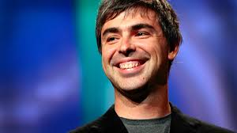

|  |
Larry Page - BiographyInventor, Engineer (1973 -)Larry Page is an internet entrepreneur and computer scientist who teamed up with grad school buddy Sergey Brin to launch the search engine Google in 1998. Early Life and CareerBorn in Michigan in 1973, Larry Page's parents were both computer experts. Following in their footsteps, he studied computer engineering at Stanford University, where he met Sergey Brin. The duo developed a search engine that listed results according to the popularity of the pages and, with Page as CEO, Google became the world's most popular search engine after launching in 1998. Page and Brin later took charge of Google's new parent company, Alphabet, until stepping down from their everyday roles in late 2019. Google BeginsAs a research project at Stanford University, Page and Brin created a search engine that listed results according to the popularity of the pages, after concluding that the most popular result would often be the most useful. They called the search engine "Google" after the mathematical term "googol," which refers to the No. 1 followed by 100 zeros, to reflect their mission to organize the immense amount of information available on the web. After raising $1 million from family, friends and other investors, the pair launched the company in 1998. Google has since become the world's most popular search engine, receiving an average of 5.9 billion searches per day in 2013. Headquartered in the heart of California's Silicon Valley, Google held its initial public offering in August 2004, making Page and Brin billionaires. |